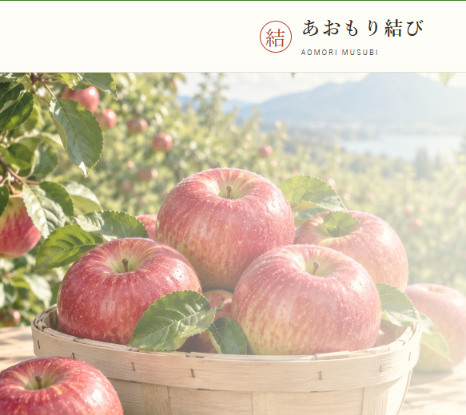

SELECTED WORKS
制作実績
Web制作とSNS運用。取り組みの目的、担当範囲、工夫した点をまとめています。

WEB / 自主制作
あおもり結び
青森の特産品を扱う架空のECサイト。構成・デザイン・実装と機能検証。
詳細を見る →WEB / チーム制作
わくわくB&S
健康麻雀をテーマにした地域交流サイト。Web実装と予約システム導入。
詳細を見る →SNS / 企画・撮影・運用
TSUGARU TABLE
津軽のグルメを紹介するSNS。リールの企画・撮影・編集・運用分析。
詳細を見る →このポートフォリオサイトはNetlifyで公開しています。